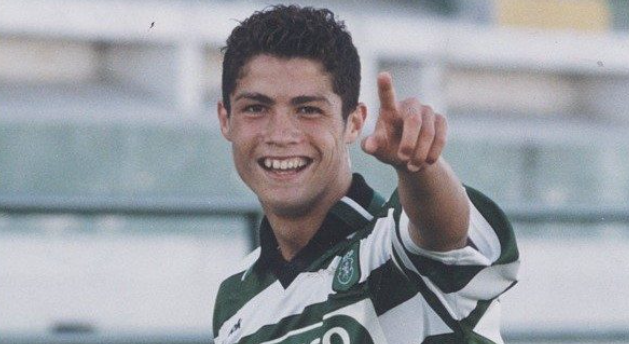
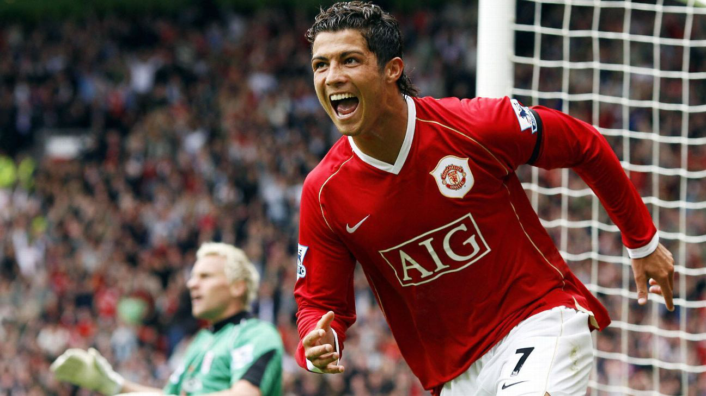

Cristiano Ronaldo dos Santos Aveiro
Nasceu dia 5 de fevereiro de 1985 na cidade de Funchal, capital da ilha da Madeira, pertecente a Portugal. CR7(como é conhecido) é um futebolista que atua como ponta-esquerda ou centroavante.
O inicio
Ronaldo começou a sua carreira nas categorias de base do Clube de Futebol Andorinha de Santo António. No ano 1995, foi ao Nacional e o seu sucesso com a equipe levou ele a assinar com o Sporting por duas temporadas, conseguindo obter com este último a Supertaça de Portugal em 2002.
A ida para o Manchester United
O talento de Ronaldo chamou a atenção de Alex Ferguson, sendo este um dos motivos pelo qual, em 2003 e quando tinha apenas 18 anos de idade, Ronaldo assinou com o gigante inglês, que pagou cerca de 12,24 milhões de libras (15 milhões de euros) ao Sporting. Desde então, após seis temporadas, o jogador ganhou três títulos da Premier League, dois da Taça da Liga Inglesa, uma Taça de Inglaterra, duas Supertaças de Inglaterra, uma Liga dos Campeões e um Campeonato do Mundial de Clubes.
Real Madrid
Depois de protagonizar a transferência mais cara na história do futebol na época, chegou ao Real Madrid num acordo no valor de 80 milhões de libras esterlinas (94 milhões de euros). No clube espanhol obteve, após nove temporadas, duas Ligas, duas Taças do Rei, duas Supertaças de Espanha, quatro Liga dos Campeões, três Supertaças da UEFA e três Campeonatos do Mundo de Clubes, sendo a figura máxima da equipa merengue durante este tempo.